clear;
close all;
rng(1);
img19200=zeros(19200,16);
ivag=zeros(19200,1);
mu=zeros(19200,1);
for i=1:16
temp=imread(strcat('../data/data_fruit/image_',int2str(i),'.png'));
temp1=reshape(temp,19200,1);
ivag=double(temp1);
img19200(:,i)=ivag;
mu=mu+ivag;
end
mu=mu/16;
m1=bsxfun(@minus,img19200,mu);
C=m1*m1.';
[V,D]=eigs(C,10);
vig2=V(:,2);
vig4=V(:,4);
vig3=V(:,3);
vig1=V(:,1);
img1=image(rescale(reshape(mu,80,80,3)));
img2=image(rescale(reshape(vig1,80,80,3)));
img3=image(rescale(reshape(vig2,80,80,3)));
img4=image(rescale(reshape(vig3,80,80,3)));
img5=image(rescale(reshape(vig4,80,80,3)));
subplot(2,3,1), image(rescale(reshape(mu,80,80,3)));
subplot(2,3,2), image(rescale(reshape(vig1,80,80,3)));
subplot(2,3,3), image(rescale(reshape(vig2,80,80,3)));
subplot(2,3,4), image(rescale(reshape(vig3,80,80,3)));
subplot(2,3,5), image(rescale(reshape(vig4,80,80,3)));
lamdas10= zeros(10,1);
for i=1:10
lamdas10(i)=D(i,i);
end
figure(2);
plot(lamdas10);
closest_rm=zeros(19200,16);
for i=1:16
x1=dot(img19200(:,i),vig1);
x2=dot(img19200(:,i),vig2);
m1=dot(mu,vig1);
m2=dot(mu,vig2);
m3=dot(mu,vig3);
x3=dot(img19200(:,i),vig3);
x4=dot(img19200(:,i),vig4);
m4=dot(mu,vig4);
k=(dot(img19200(:,i),mu)-x1*m1-x2*m2-x3*m3-x4*m4)/(dot(mu,mu)-m1*m1-m2*m2-m3*m3-m4*m4);
col_clos_rm=k*mu+(x1-m1*k)*vig1+(x2-m2*k)*vig2+(x3-m3*k)*vig3+(x4-m4*k)*vig4;
closest_rm(:,i)=col_clos_rm;
end
for i=1:16
figure(i+2);
img2=rescale(reshape(closest_rm(:,i),80,80,3));
img1=rescale(reshape(img19200(:,i),80,80,3));
subplot(1,2,1),image(img1);
subplot(1,2,2),image(img2);
end
figure(19);
D1=D(1:4,1:4);
U=V(:,1:4);
S=D1^0.5;
A= U*S*U.';
for i=1:3
w=randn(19200,1);
X=mu+A*w;
img=rescale(reshape(X,80,80,3));
subplot(3,3,i),image(img);
end
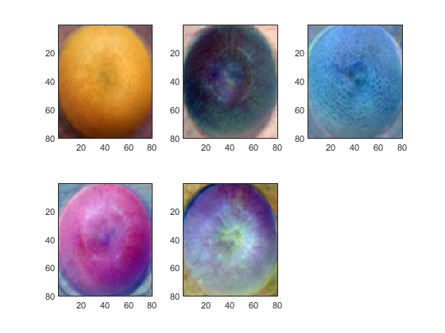 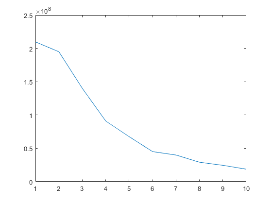 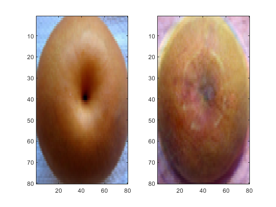 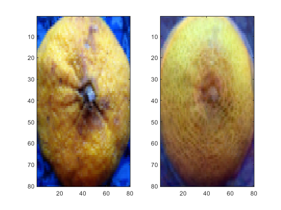 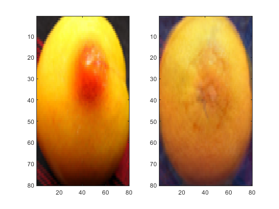 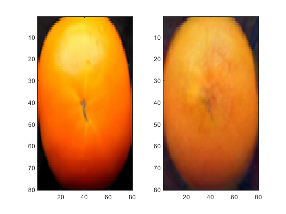 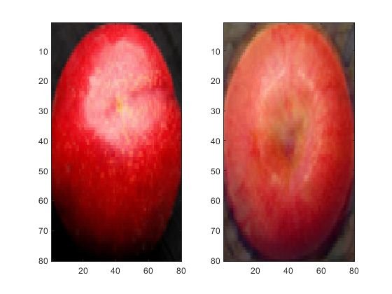 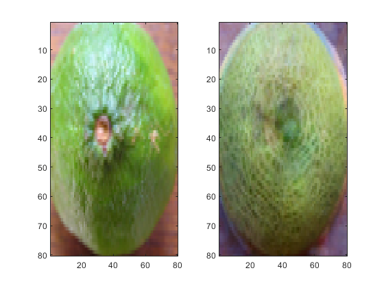 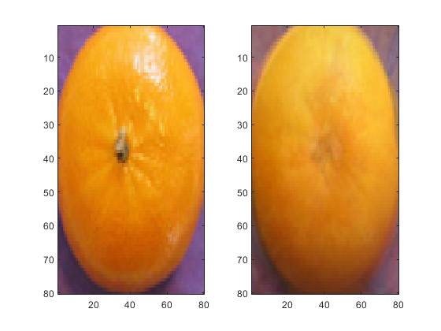 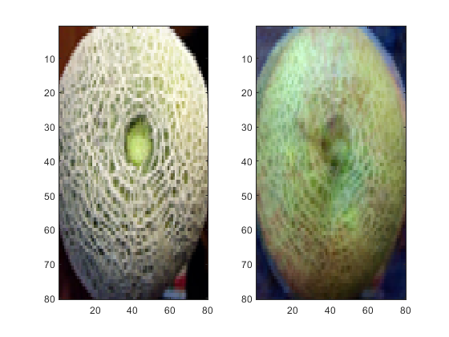 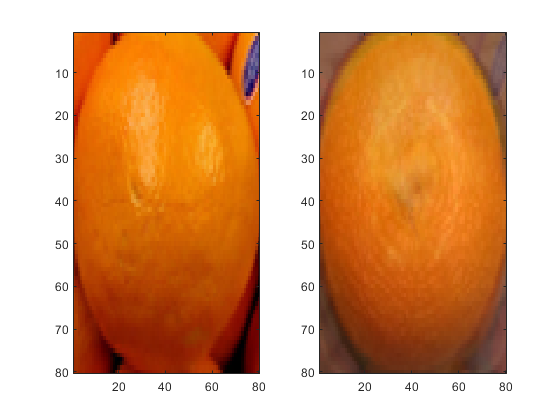 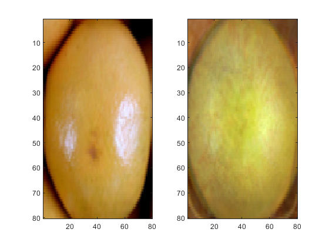 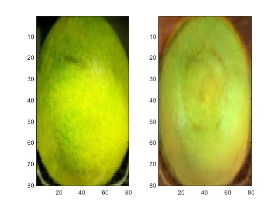 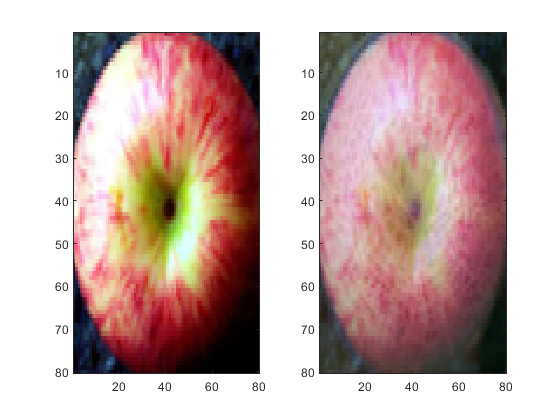 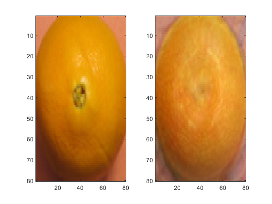 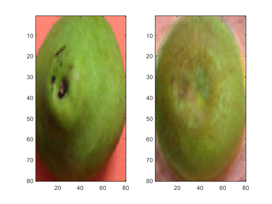 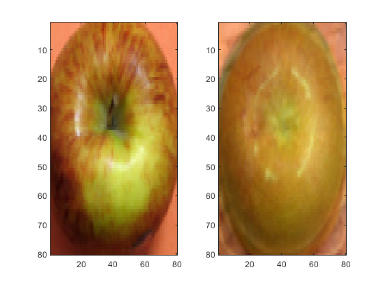 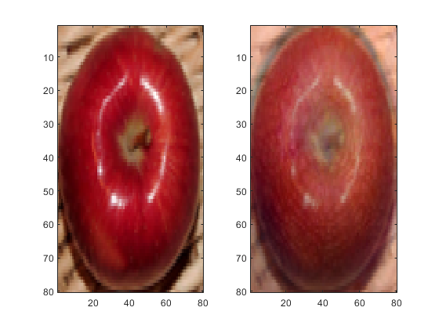 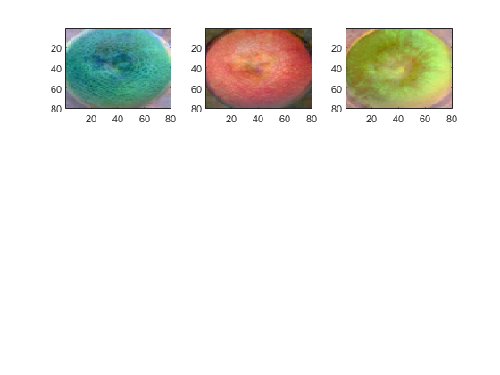